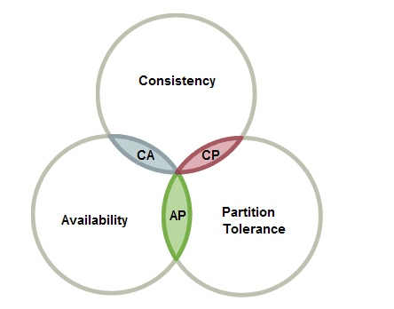

CAP
CAP 定理的含义
分布式系统（distributed system）正变得越来越重要，大型网站几乎都是分布式的。
分布式系统的最大难点，就是各个节点的状态如何同步。CAP 定理是这方面的基本定理，也是理解分布式系统的起点。
本文介绍该定理。它其实很好懂，而且是显而易见的。
一、分布式系统的三个指标

1998年，加州大学的计算机科学家 Eric Brewer 提出，分布式系统有三个指标。
Consistency
Availability
Partition tolerance
它们的第一个字母分别是 C、A、P。
Eric Brewer 说，这三个指标不可能同时做到。这个结论就叫做 CAP 定理。
二、Partition tolerance
先看 Partition tolerance，中文叫做"分区容错"。
大多数分布式系统都分布在多个子网络。每个子网络就叫做一个区（partition）。 分区容错的意思是，区间通信可能失败。 比如，一台服务器放在中国，另一台服务器放在美国，这就是两个区，它们之间可能无法通信。

上图中，G1 和 G2 是两台跨区的服务器。G1 向 G2 发送一条消息，G2 可能无法收到。 系统设计的时候，必须考虑到这种情况。
一般来说，分区容错无法避免，因此可以认为 CAP 的 P 总是成立。 CAP 定理告诉我们，剩下的 C 和 A 无法同时做到。
三、Consistency
Consistency 中文叫做"一致性"。 意思是，写操作之后的读操作，必须返回该值。举例来说，某条记录是 v0，用户向 G1 发起一个写操作，将其改为 v1。

接下来，用户的读操作就会得到 v1。这就叫一致性

问题是，用户有可能向 G2 发起读操作，由于 G2 的值没有发生变化，因此返回的是 v0。G1 和 G2 读操作的结果不一致，这就不满足一致性了。

为了让 G2 也能变为 v1，就要在 G1 写操作的时候，让 G1 向 G2 发送一条消息，要求 G2 也改成 v1。

这样的话，用户向 G2 发起读操作，也能得到 v1。

四、Availability
Availability 中文叫做"可用性"，意思是只要收到用户的请求，服务器就必须给出回应。
用户可以选择向 G1 或 G2 发起读操作。不管是哪台服务器，只要收到请求，就必须告诉用户，到底是 v0 还是 v1，否则就不满足可用性。
五、Consistency 和 Availability 的矛盾
一致性和可用性，为什么不可能同时成立？答案很简单，因为可能通信失败（即出现分区容错）。
如果保证 G2 的一致性，那么 G1 必须在写操作时，锁定 G2 的读操作和写操作。只有数据同步后，才能重新开放读写。锁定期间，G2 不能读写，没有可用性不。
如果保证 G2 的可用性，那么势必不能锁定 G2，所以一致性不成立。
综上所述，G2 无法同时做到一致性和可用性。系统设计时只能选择一个目标。如果追求一致性，那么无法保证所有节点的可用性；如果追求所有节点的可用性，那就没法做到一致性。
六
RDBMS(mysql/oracle/sqlServer)>ACID
A(Atomicity)原子性
C(Consistency)一致性
I(Isolation)独立性
D(Durability)持久性
NOSQL(redis/mongdb)========>CAP
C(Consistency)强一致性
A(Availability)可用性
P(Partition tolerance)分区容错性
最多只能同时较号的满足两个
CAP理论的核心是：一个分布式系统不可能同时满足一致性、可用性、和分区容错行这三个需求，因此，根据CAP原理将NoSQL数据库分成了满足CA原则、满足CP原则和满足AP原则三大类；
CA-单点集群，满足一致性，可用性的系统，通常在可扩展性上不太强大。
CP-满足一致性，分区容错的系统，通常性能不是特别高
AP-满足可用性，分区容错性的系统，通常可能对一致性要求低一些
CAP的3进2
CAP理论就是说在分布式存储系统中，最多只能实现上面的两点。而由于当前的网络硬件肯定会出现延时丢包等问题，所以分区容错性是我们必须要实现的。 所以我们只能在一致性和可用性之间进行权衡，没有NoSQL系统能同时保证这三点。